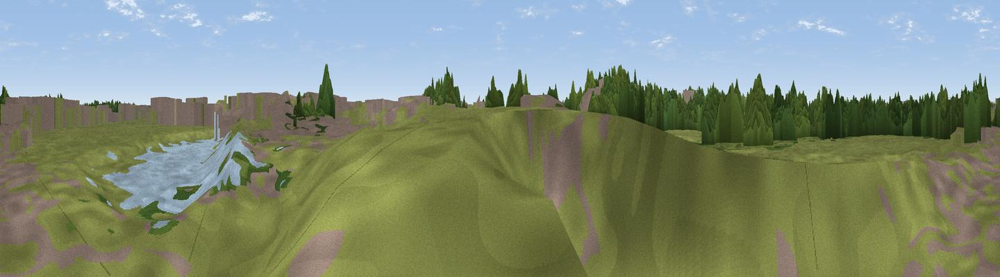

09L Heathrow Viewpoint
#46188 in England · top 94% of its area beats it · near Longford · access?Where it is
The exact computed spot (TQ 04639 76268). Click the marker for map links.
Public access: no public right of way or access land is recorded at this exact spot — it may be on private land. Computed from Natural England's CRoW access layer and OpenStreetMap rights of way — not the legal definitive map. Always verify locally.
The view, rendered

A 360° render of this exact spot computed from the terrain model, tree cover and land cover — summer colours, afternoon light, calibrated against photographs of famous viewpoints. Real trees, hedges and buildings will differ in detail.
The panorama
Grey silhouette: terrain skyline in each direction (720 bearings, Earth curvature and refraction included). Dashed green: skyline with trees (+15 m) and buildings (+8 m) as obstacles. Blue strip: how far the ground is visible on each bearing.
Where the view opens
Wedge length = distance to the farthest visible ground on that bearing (vegetation-aware). Rings at 10, 25 and 50 km.
What fills the view
64% grassland · 26% woodland · 8% built-up · 1% cropland · 1% water
Angular shares of the visible panorama (visual magnitude), not map area. Landscape diversity 0.41 (0–1 Shannon).
Key numbers
More beautiful places nearby
The staircase of upgrades: each row has a higher view potential than everything closer. Driving times are estimates from straight-line distance, calibrated against real road routing — check an actual route before setting out.
| Place | Direction | Drive | Score |
|---|---|---|---|
| #ViewHeathrow | ESE · 4 km | ~9 min | 10.3 |
| Viewpoint near Staines-upon-Thames | SSW · 5 km | ~10 min | 14.6 |
| 27L Runway Viewing Area, Myrtle Avenue | ESE · 5 km | ~11 min | 16.8 |
| Monolith Hill | SE · 5 km | ~11 min | 19.3 |
| Viewpoint near Colham Green | NNE · 5 km | ~12 min | 21.1 |
| Viewpoint near Colham Green | NE · 6 km | ~12 min | 27.1 |
| Viewpoint near Englefield Green | SW · 6 km | ~14 min | 32.8 |
| Viewpoint near Bishopsgate | SW · 7 km | ~14 min | 33.0 |
51.47570, -0.49470 · source: osm viewpoint · position refined by local search. Computed location — check access rights before visiting.